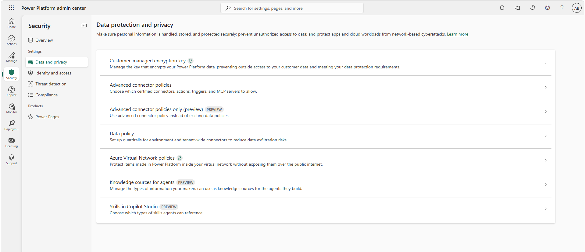
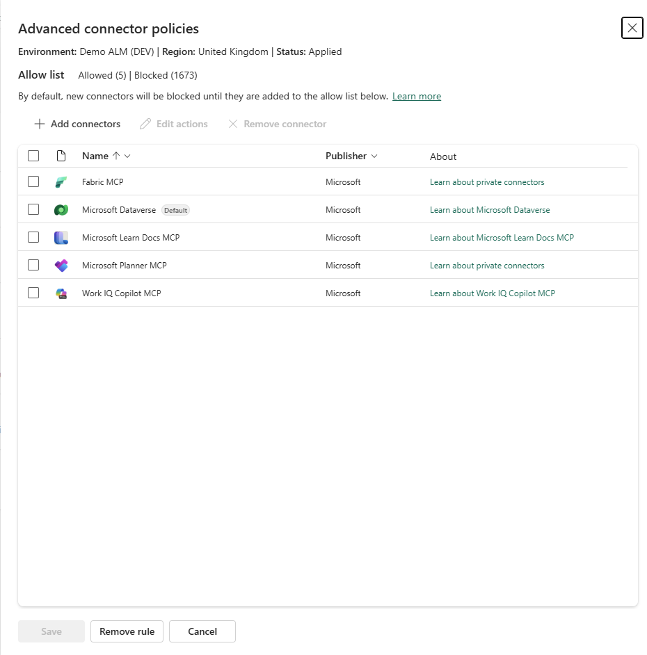
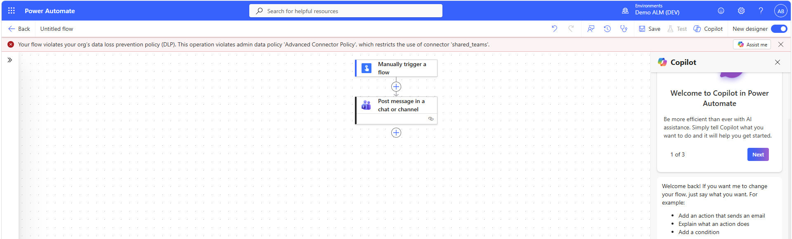

Data loss prevention policies have been the backbone of Power Platform connector governance for nearly a decade. Business, Non-Business, Blocked. Sort every connector into one of three buckets, hope nothing slips through, and try not to think too hard about the connectors you couldn't block at all.
There's now a different way to do it. Advanced Connector Policies (ACP) reached general availability on 4 June 2026, and they swap the three-bucket sorting exercise for a strict allowlist. Either a connector is allowed or it isn't.
This post covers what ACP is, why it exists, and how to approach it sensibly. You'll find it in the Power Platform admin centre under Security > Data and privacy.

What actually changed
ACP is a strict allowlist with a default-deny posture. Everything is blocked unless you explicitly allow it. That includes new connectors. When Microsoft or a third-party publisher adds a certified connector to the platform, it arrives blocked. Nothing sneaks into your tenant because it's new.
Compare that with classic DLP, where a new connector lands in whichever default group your policy specifies, and where a handful of connectors were flat-out nonblockable. Under ACP on Managed Environments, you can block anything. Including the previously untouchable ones.

The other headline changes:
One policy per environment. Each environment has exactly one effective ACP, either configured directly or inherited from an environment group. If you've ever tried to work out which of seven overlapping DLP policies actually applies to a given environment, you'll appreciate this immediately.
Action-level control. You can allow a connector but block specific actions within it. Triggers, internal actions, and deprecated actions are all visible and tagged, which classic DLP never showed you.
Design-time enforcement. Makers get blocked while authoring, not just at runtime. No more building a flow, publishing it, and discovering the violation when it fails in production.

MCP server governance. Agents reach external tools through MCP servers, and ACP lets you block an MCP server the same way you block any connector. Classic DLP had no concept of this.
No more Business vs Non-Business. The classification model is gone. Microsoft's own documentation puts it plainly and says the concept wasn't deemed effective in policy management. Most admins who've lived with it would agree.
What ACP covers today (and what it doesn't)
ACP is built on the certified connector catalogue. That means:
- Certified connectors: fully supported, connector and action level
- MCP connectors: supported, server-level blocking
- Custom connectors: not yet supported, planned as a separate rule type
- HTTP connectors: not yet supported, planned alongside custom connectors
- Virtual connectors: not supported, and Microsoft has confirmed they won't be
The custom and HTTP connector gap matters. If your governance relies on endpoint filtering or custom connector control, you'll be running classic DLP alongside ACP for a while yet. That's called mixed mode. At runtime the platform merges the most restrictive settings from both systems, so neither can loosen what the other tightened.
Licensing and where it fits
You can apply ACP to a single environment without Managed Environments, so nobody is priced out of migrating from classic DLP. There's a catch though. On non-Managed Environments, the nonblockable connectors stay nonblockable.
Applying ACP at scale through environment groups requires Managed Environments. That's also where ACP shines. Because policies are native to environment groups, the right policy automatically follows every environment created through personal developer environment provisioning and routing. No per-environment admin overhead.
ACP is off by default. Nothing changes in your tenant until an admin activates it, so there's no forced migration and no surprise enforcement.
Should you care yet?
Yes, but with a plan rather than a big bang. The sensible path:
- Review your connector usage first. Power Platform inventory now includes preview visibility into connector and operation usage across apps, flows, and agents, which gives you the impact analysis you need before touching a policy.
- Pilot ACP on a single low-risk environment. Choose somewhere with a few makers and no production dependencies. Allow only what's actually in use and watch what breaks. That tells you more than any planning workshop will.
- Keep classic DLP where ACP doesn't yet have parity (custom connectors, HTTP, and endpoint filtering; custom MCP servers are onboarded through custom connectors under the hood, so they sit in this gap too).
A note on ACP-only mode. Treat it as a target future state. Until ACP reaches parity on custom connectors, HTTP, and endpoint filtering, turning classic DLP off removes protections you're probably relying on. Revisit when those capabilities are available.